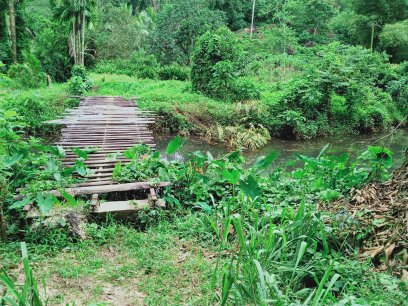
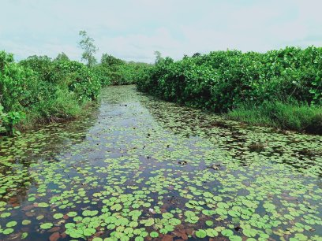

The village is the unit that enriches with the most important, beautiful, and things. That is filled full of nature, the people who live there full of gratitude. Their life is very simple, Important thing is they want to produce their food themselves, that is why they are working hard, the additional food which they produced, is released to outside to sell or exchange with others. Most of the villagers are relations, their lands are transferred to generation to generation.

They are very innocent, humble. They have good hospitality. Most of these attitudes are still remain in the village, still, they are following traditional customs and rituals they respect others even flora and fauna. This is the reason the village is full of green, their habit will be explained onward.
This is an access to the traditional village through the green canopy. With a gravel road.
This is a small stream that is an ideal place to bathe and wash.

It should be traveled over these bridges to access the village.

Hamlet is the plenty flower on stream likes this.
- Look at this roofing pattern and walling pattern.
- Weaved coconut twigs are used for cover the roof.
- A pulp (clay) that is made the soil mixed with water is used for built the walls.
TRADITIONAL COOKING SYSTEM IN THE VILLAGE
Considering the traditional cooking system the spices are taken a very special place. Ginger, Pepper, Turmeric, Cinnamon, Chilly, Curry powder, etc… are very very special. Actually the spice is mentioned above are used as well as popular medicines. Normally they are planted in their home garden to use in an emergency.
The earthenware, firewood, and hearth are taken in a very special place when they are cooking. The kitchen is already built especially for that. The importance is the villagers can collect many of these free of charge.
A traditional kitchen
Curries
Polsambol
Fish curry
Dhal curry
Fish curry with milky gravy
Some traditional spices and herbs
TERMERIC

GINGER